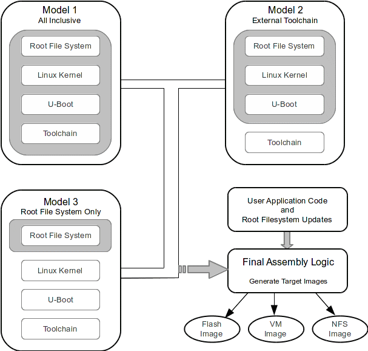

Buildroot is a simple, efficient and easy-to-use tool to generate embedded Linux systems through cross-compilation. That phrase, taken from the Buildroot website, and provides exact explanation of what Buildroot is. Buildroot also provides flexibility in how to manage embedded Linux systems. Figure 1 shows three typical models.

Figure 1 ‒ Typical Buildroot Models
Buildroot can be used several different ways. Figure 1 shows three typical models:
Model 1: All inclusive, Buildroot generates the Root File System, the Linux Kernel, a U-Boot image, and contains the cross-compilation tools
Model 2: Identical to Model 1, with the exception of the usage of external cross-compilation tools.
Model 3: Buildroot is used to build only the Root File System, while the Kernel and U-Boot are built externally, using external cross-compilation tools.
In these models, the user application code is built externally, and then final assembly is done by user supplied logic to generate images specific to the user needs. Although it's possible to add user packages to Buildroot for generation within Buildroot itself, it's generally more practical to simply build the user appplication code with standard Makefiles using either a Buildroot internal set of cross-compilation tools, or external cross-compilation tools.